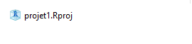
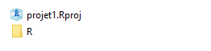
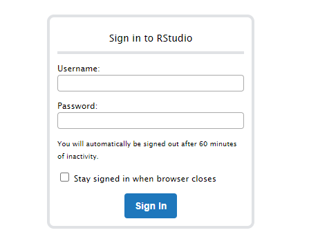

Chapitre 13 : Ce qui se conçoit bien s’énonce clairement !
Mes(-)aventures ?
Votre aventure touche à sa fin, vous voilà en possession des 6 runes, votre fidèle épée, un bouclier, une fiole d’immonde jus de mandragore, la clé de la cave à ambroisie, une plume du tidyverse, un boomerang, une paire de palme et…ce bon vieux grimoire IgoR.
Le grimoire ? Mince, le grimoire ! Quelle n’est pas votre surprise quand vous découvrez que votre immersion dans le datalake a ruiné ses pages. Tous vos précieux apprentissages dilués, presque illisibles !
Vous décidez d’utiliser un “projet RStudio” pour organiser l’écriture de sortilèges.
Rappel RStudio
RStudio est un logiciel qui facilite l’écriture de code R.
On lance RStudio.
Pourquoi créer un “projet RStudio” ?
Quand on utilise des programmes R dans le cadre d’un projet statistique, il est conseillé de créer un projet RStudio.
Un projet RStudio permet de :
rassembler les scripts utilisés,
faciliter l’utilisation des programmes par tout utilisateur (reproductibilité),
simplifier le travail en équipe : plusieurs personnes pourront travailler en même temps sur les scripts du projet sans risque d’écraser par mégarde le travail d’un collègue.
Création d’un projet RStudio
On a ouvert RStudio.
Je crée un projet RStudio - cliquez ici
Ci-dessous, l’une des façons de créer un projet RStudio.
Dans RStudio, tout en haut à droite, cliquer sur “Project: (None)”.
Une liste déroulante apparaît.Cliquer sur “New Project…”
Une fenêtre pop-up “Create Project” s’afficheChoisir “New Directory” .
Dans la page “Project Type” de la pop-up,
cliquer sur “New Project”.Dans la page suivante,
champs “Directory Name:” renseigner le nom du projet, par exemple “projet1”,
champs “Create project as subdirectory of:” choisir le répertoire parent du projet,
par exemple “C/user/R/mesProjets/”,
puis cliquer sur “Create Project”
Le projet est maintenant utilisable.
Dans le répertoire parent du projet un répertoire “projet1”a été créé.
Visualisation du projet dans l’explorateur de fichier
Avec l’explorateur de fichier je consulte le contenu du répertoire “projet1” :

Le dossier “projet1” contient un seul fichier “projet1.Rproj” .
Fermeture du projet, puis réouverture
On est à nouveau dans RStudio.
En haut à droite, là où il y avait “Project: (None)”, il y a maintenant indiqué “projet1”.
On peut fermer le projet “projet1”si on le souhaite :
- en haut à droite, cliquer sur “projet1” .
- choisir “Close Project”
On peut réouvrir le projet à tout moment :
- en haut à droite, cliquer sur “Project: (None)”, puis choisir “Open Project…”
- dans la fenêtre pop-up qui apparaît, choisir le répertoire “projet1” puis le fichier “projet1.Rproj”
Le répertoire “R” du projet
Je crée un sous-dossier “R” dans le répertoire “projet1” avec l’explorateur de fichier.
Le contenu du dossier “projet1” devient :

Ce sous-dossier “R” sert à stocker les scripts R.
Le projet “projet1” est maintenant prêt.
Il reste à le compléter avec des scripts écrits dans le langage des Runes.
Création d’un “projet de package”
Un projet de package est un projet RStudio plus élaboré que les simples projets créés ci-dessus.
Un projet de package permet notamment :
de créer un package,
de fabriquer une documentation des scripts particulièrement bien assemblée,
etc.
Création dans RStudio
Je crée un projet de package - cliquez ici
Ci-dessous, l’une des façons d’obtenir un projet de package.
On peur créer un projet de package de la même façon qu’on a construit un simple projet ci-dessus :
en haut à droite, cliquer sur “Project: (None)” etc.Deux différences avec la création d’un simple projet :
dans la page “Project Type” , cliquer sur “R package”,
dans la page suivante renseigner le nom du projet, par exemple “projet2”, dans le champs “Package Name:” .
Après création du projet de package “projet2”, un répertoire “projet2” apparaît.
Visualisation du projet dans l’explorateur de fichier
Le répertoire “projet2” a alors le contenu suivant :
Le dossier “projet2” inclut un sous-répertoire “R” qui contient un premier script R “exemple”.
Ce script “exemple” est nommé “hello.R” et comprend le code suivant :
# Hello, world! # # This is an example function named 'hello' # which prints 'Hello, world!'. # # You can learn more about package authoring with RStudio at: # # http://r-pkgs.had.co.nz/ # # Some useful keyboard shortcuts for package authoring: # # Install Package: 'Ctrl + Shift + B' # Check Package: 'Ctrl + Shift + E' # Test Package: 'Ctrl + Shift + T' hello <- function() { print("Hello, world!") }
Le dossier “projet2” inclut aussi un sous-répertoire “man” qui contient des fichiers “.Rd” (fichiers de documentation).
Ces fichiers “.Rd” sont typiquement créés avec le package roxygen2 (vu dans le chapitre précédent).
Utilisation
J’emploie le sortilège “hello()” :
# Dans un projet de package, je peux charger en mémoire # tous les sortilèges du projet avec "load_all()" library(devtools) load_all() # J'exécute le sortilege "hello()" hello()## [1] "Hello, world!"
## J'affiche la documentation du sortilège "hello()" # J'utilise le point d'interrogation suivi de "hello", # (ce qui est synonyme de "help(hello)" ) ?hello
R: Hello, World!
hello {projet2} R Documentation Hello, World!
Description
Prints 'Hello, world!'.
Usage
hello()Examples
hello()[Package projet2 version 0.1.0 ]
Le projet “projet2” est prêt.
Il reste à le compléter avec des scripts dans le langage des Runes.

Quizz
Nous pourrions aussi imaginer de créer d’autres types de projet, mais déjà votre mémoire se brouille, il vous faut vite consigner vos mémoires épiques.
C’est parti ! Vous allez maintenant ouvrir une autre partie de ce chapitre 13, avec le service intitulé “Grimoire - Neverending” dans votre panneau comportant tous les tutoriels du FuncampR. Vous pourrez alors créer un projet RStudio, et éditer votre grimoire. À la page d’ouverture de Rstudio, il vous faudra indiquer :
- comme nom d’utilisateur (username) : icarius
- comme mot de passe (password) : statia

Fin de la première partie du chapitre 13 >> lancez la partie “Grimoire - Neverending” qui vous permettra de créer un projet RStudio et d’éditer votre grimoire (partie 2 du chapitre 13)
Version 0.9.3